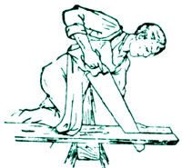
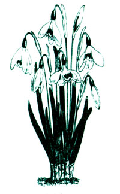

A Recycled Garden
Michael Chilquist uses 2 inch PVC pipe and a pillowcase to keep his shop vac from clogging when cleaning sawdust; R.W. Gilson makes perforated 3 x 5 cards with a sewing machine; Jacquie Sewell suggests ways to recycle items for flagstone, mulch, rocks and plants; Zena Colterjohn ships fragile items in disposable diapers; Don Carroll runs necklaces and chains through a plastic straw to keep from tangling; Morrow Olcott recycles discarded seat belts as gate latches; Vicki Eastwood keeps cauliflower heads white by covering them with panty hose.
By the Mother Earth News editors
June/July 1992
Country Lore
A Happier Shop-Vac
Really fine sawdust, which I occasionally get when I'm sanding with 320 grit or finer, seems to overwhelm the filter on my shop-vac. The result is more dust in the air than in the vacuum, much to my irritation. Initially, I tried wrapping a pillow case around the filter inside the canis ter. This worked fine, except that it clogged after only a few minutes and had to be shaken or thumped to knock loose the sawdust.
The solution to the problem was to use a 6" piece of 2" OD PVC pipe pushed into the exhaust port of the shop-vac (perfect fit). Then on the end, to hose-clamp the pillowcase until it inflates like a balloon. The inside of the pillowcase provides more filter area, so it doesn't clog as easily, and the contents dump out without any fuss.
-Michael Chilquist
Pittsburgh, Pennsylvania
You May Have Already Won...
I have found a way to make a perforated 3"x5" card, which happens to be the size needed to enter most contests, send recipes, and apply for other things. Any sewing machine set at a wide stitch rate can produce a perfect perforation for any standard 3"x5". I call it a "Gilson" card. It's just one more simple thing to save you a trip to the store, and it's fun to do.
-R. W. Gilson
St. Louis, Missouri
More Ways to Recycle
With some ingenuity and a lot of sweat, recycled landscaping can produce the yard of your dreams, with a minimal cash outlay:
Flagstones. Instead of using expensive flagstones for garden paths, used salvaged pieces of cement, which you can find at apartment complexes and/or city streets where sidewalks are being replaced. They create the same rustic effect when randomly placed and edged with thyme.
Broken concrete also makes a functional retaining wall. Fill the crevices with plants. When they mature, you'll have a beautiful retaining wall at a fraction of the cost of one built with quarried stone.
Mulch. If "free" best fits your budget, call your local utility company or county road commission. Both have road crews which perform annual maintenance involving the trimming and chipping of trees and limbs. Wood chips are usually free for the taking, and sometimes delivered right to your house if you ask.
Rocks. Rocks act as attractive, permanent mulch under shrubs and foundation plantings, and provide visual interest in your garden. A drive through the country reveals many rock piles. Most farmers will gladly allow you to come take your pick.
Plants. Gardeners everywhere love to share their bounty. If you're willing to ask, you'll be surprised at how many free flow ers, herbs, shrubs, and trees you'll be able to "recycle" from your neighbor's crowded garden into your own.
Look around you, use your imagination, and don't be afraid to ask. Recycled landscaping helps keep both the Earth and your wallet green.
-Jacquie Sewell
Mason, Michigan
A Gift that Keeps on Giving
Here's a tip for those of you who need to send a fragile baby-shower gift to someone who lives far away. Pack the breakable object in a box of disposable diapers. The soft padding will keep the gift well-protected.
And the new mother can also recycle them!
-Zerm Colterjohn
Barrington, Illinois
Not Just for Soda Anymore
To keep gold chains and other delicate necklaces free from tangling, simply run the link through a plastic straw and fasten the clasp on the outside. If the straw is too long to keep in your jewelry box, you can fold or bend the straw, and it will still keep your necklace straightened.
-Don Carroll
Owasso, Oklahoma
Buckle-Up your Fence
While you're at the junkyard, pick up a few seat belts from discarded cars. The straps make great gate latches. Just nail one to your wooden gate post, and the other to your fence "door." If your gate is metal, attach both cloth strips to the post, then pass one buckle end around the upright member on the gate and back to the other. They're weatherproof, easily installed, don't cost much, and never get out of alignment the way most conventional latches eventually do. Best of all, although it takes just one hand to push the button to open a belt, no animal has ever figured out how to free itself!
-Morrow Olcott
Bloomsbury, New Jersey
Sheer Cauliflower
You can keep your cauliflower heads white this summer by stretching old panty hose legs over them. First, neatly overlap the foliage to cover the developing head.Then slip on the stocking and secure it to the stem. That's all there is to it.
-Vicki Eastwood
Centerville, Kansas
|
 |
 |
 |